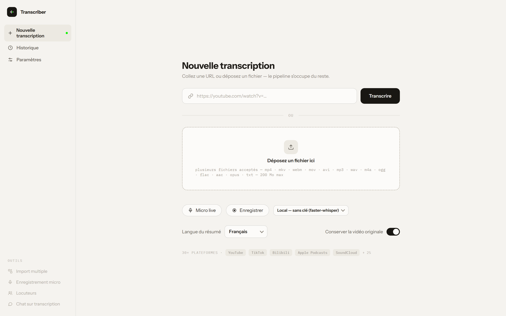
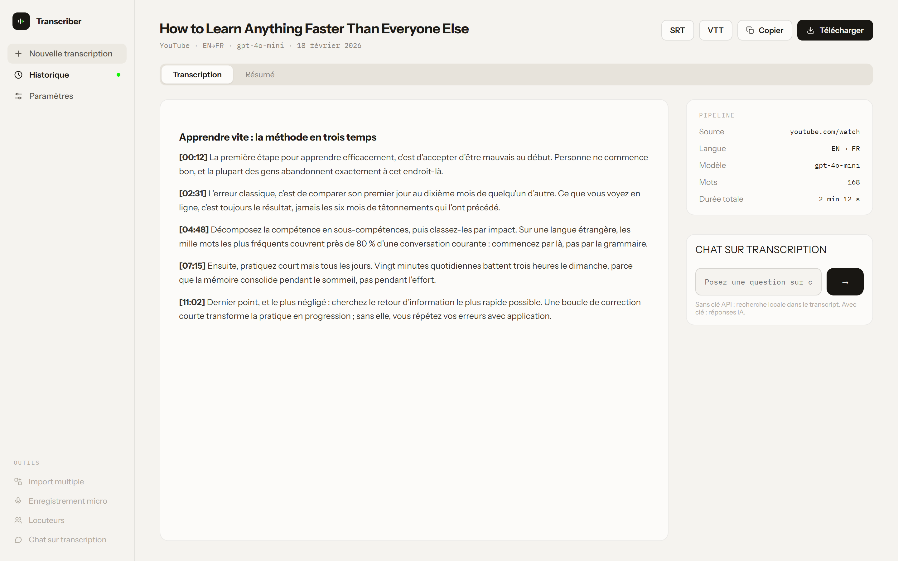
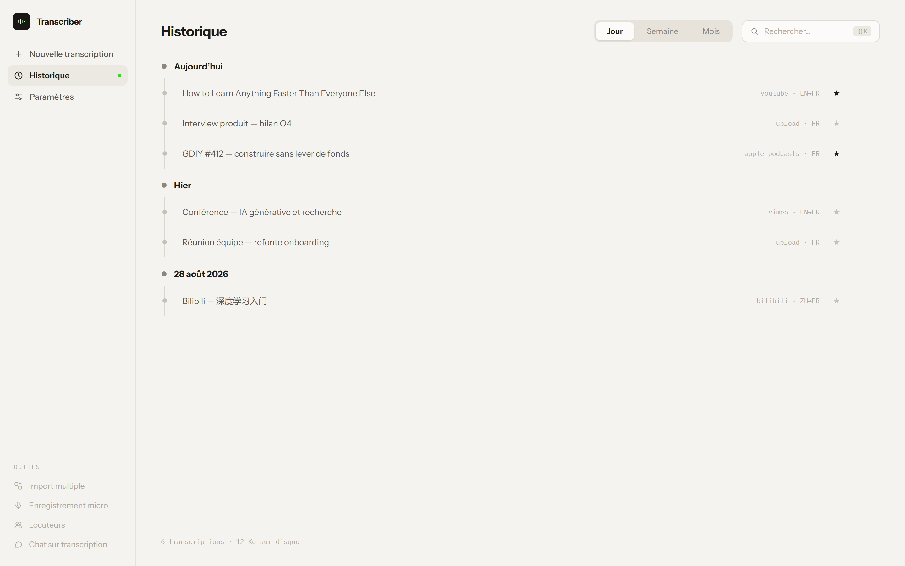

UN LOGICIEL.
PAS UN
ONGLET.
Un installeur Windows classique : double-clic, raccourci dans le menu Démarrer, fenêtre à part. Le moteur de transcription, FFmpeg et Whisper sont embarqués — aucune ligne de commande, aucun compte à créer.

LE TEXTE
ARRIVE
AVANT
LA FIN.
Le backend streame chaque étape en SSE. Vous voyez les mots se poser pendant que la machine travaille — pas dix minutes plus tard.
Voir le pipelineLE PIPELINE
Sous-titres natifs quand ils existent, Whisper sinon. Le chemin le plus court est choisi pour vous.
TÉLÉCHARGEMENT
Récupération du média depuis l'URL ou l'upload local — jusqu'à 200 Mo par fichier.
TRANSCRIPTION
Sous-titres natifs détectés, sinon faster-whisper en repli automatique.
OPTIMISATION IA
Ponctuation, paragraphes, corrections. Le texte devient lisible.
TRADUCTION
Conditionnelle : déclenchée seulement si la langue diffère de la vôtre.
RÉSUMÉ
Multilingue, structuré, prêt à coller dans un doc ou un message.
L'APPLICATION
Tout voir

EXPORTS
Les sous-titres horodatés sont générés dès que le chemin Whisper est emprunté.
« Vos fichiers ne quittent pas votre machine. Le seul texte qui sort, c'est celui que vous envoyez à votre propre modèle. »
ÉDITIONS
Trois façons de l'installer. Aucune n'est payante : vous payez vos propres appels de modèle, rien d'autre.
- Python 3.8+ · FastAPI
- Whisper local ou clé API
- Serveur MCP inclus
- Licence Apache 2.0
- Installeur classique, double-clic
- FFmpeg et Whisper embarqués
- Aucune installation de Python
- Fonctionne sans clé API
- Une commande, image unique
- Whisper local, vLLM, Ollama
- Aucune donnée ne sort du réseau
- Accessible à toute l'équipe
INSTALLEZ.
COLLEZ.
LISEZ.
La vidéo que vous n'aurez jamais le temps de regarder, résumée avant la fin de votre café — sur votre machine.